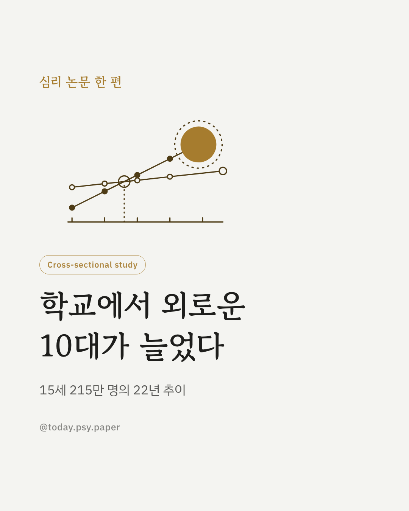
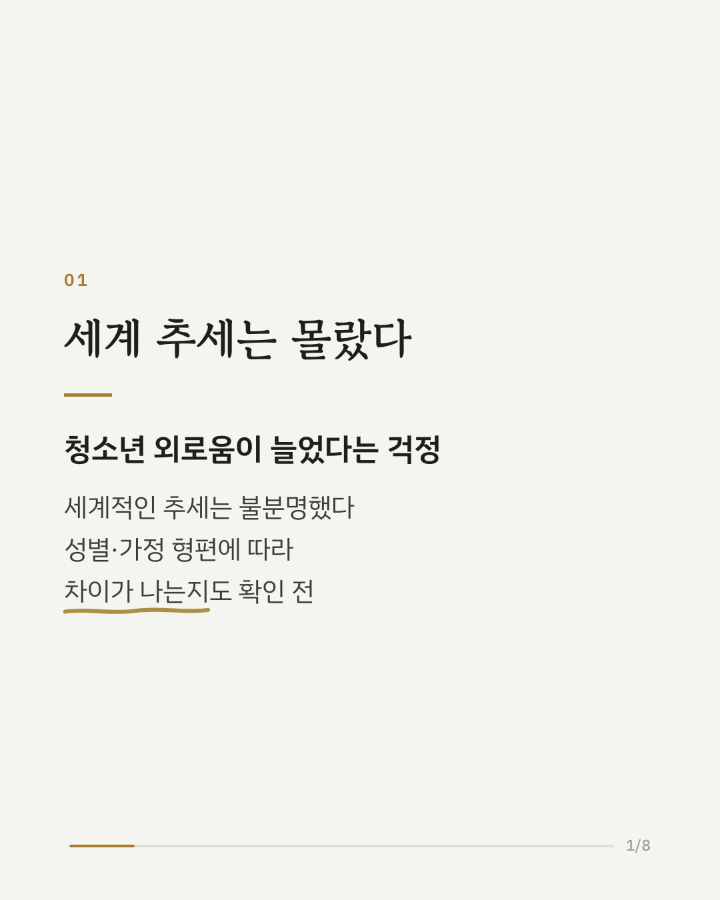
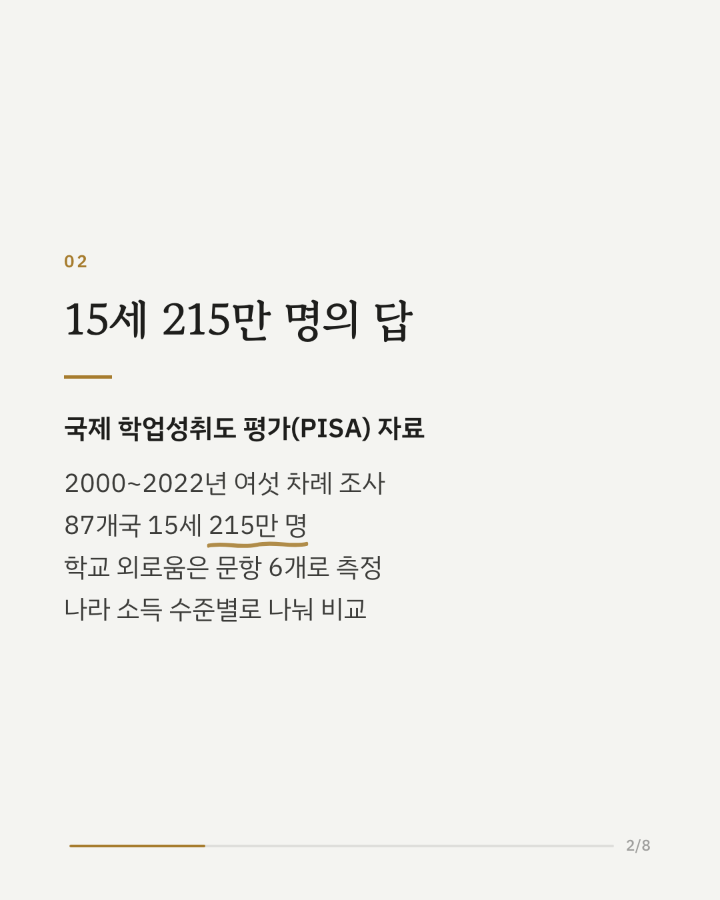
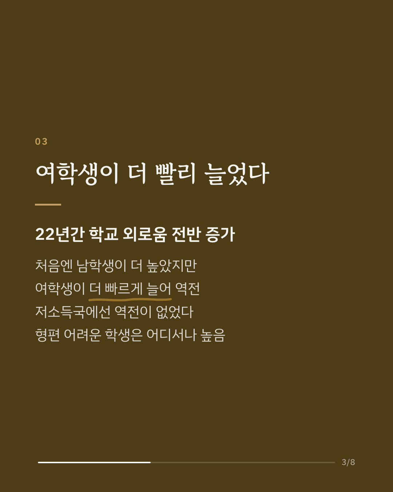
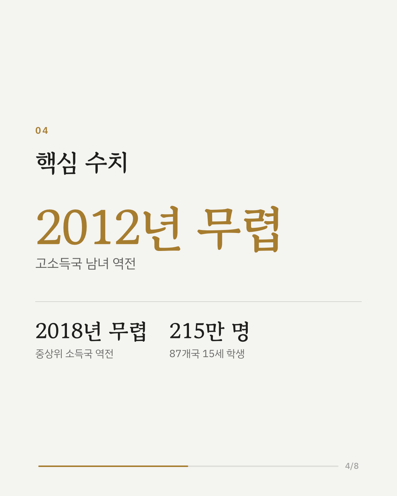
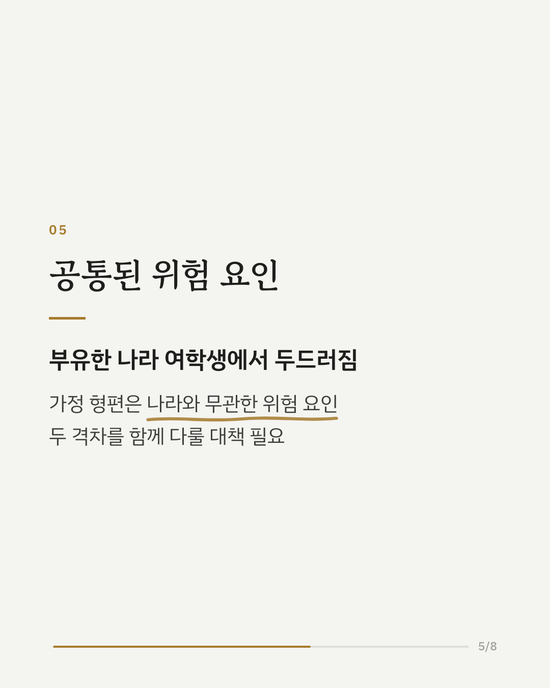
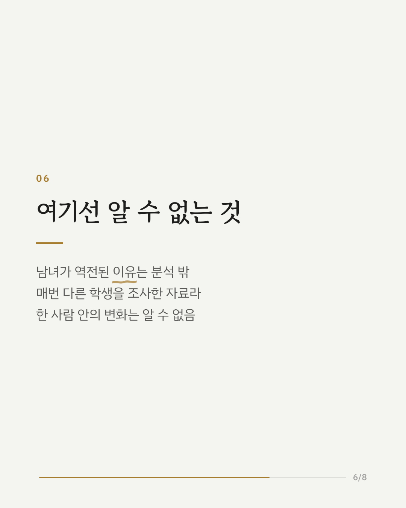
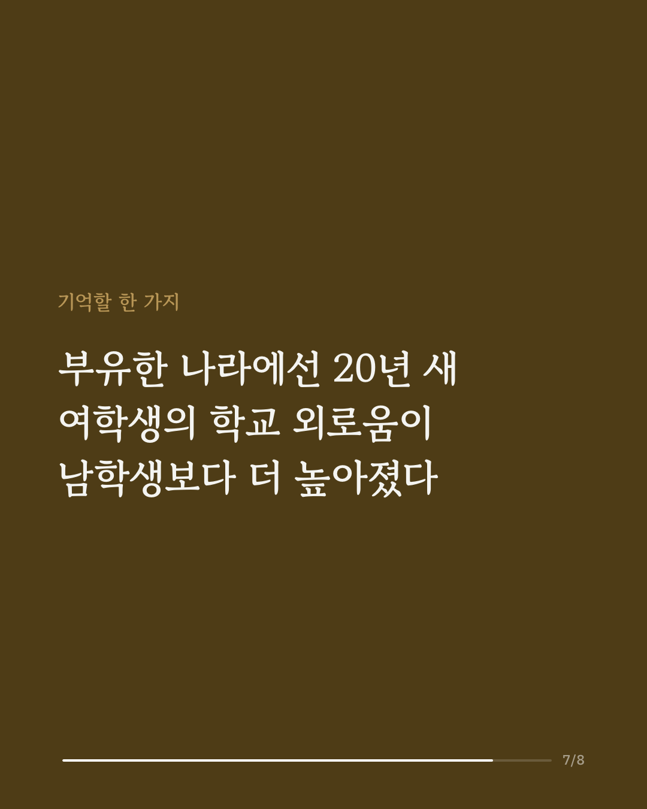
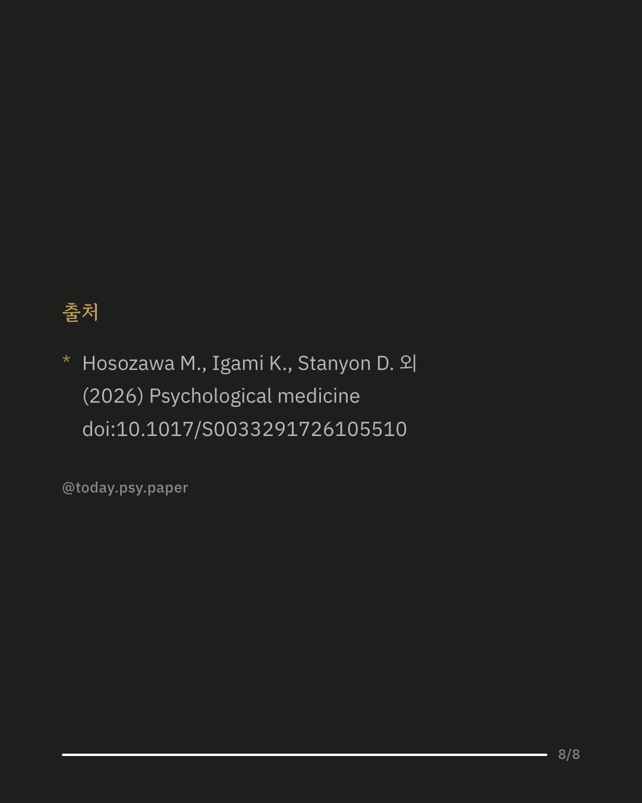

청소년 외로움이 늘고 있다는 걱정은 많았지만, 세계적인 추세와 성별·가정 형편에 따른 차이는 분명하지 않았습니다. 이 연구는 국제 학업성취도 평가(PISA)에 참여한 87개국 15세 학생 215만 명의 응답으로 2000년부터 2022년까지 학교 외로움의 변화를 살폈습니다. 학교 외로움은 전반적으로 늘었습니다. 처음에는 남학생이 더 높았지만 여학생 쪽이 더 빠르게 늘어, 고소득 국가에서는 2012년 무렵, 중상위 소득 국가에서는 2018년 무렵 남녀가 역전됐습니다. 저소득·중하위 소득 국가에서는 이런 역전이 보이지 않았습니다. 가정 형편이 어려운 학생은 성별과 나라 소득 수준에 상관없이 학교 외로움이 더 높았습니다. 연구진은 커지는 성별 격차와 가정 형편에 따른 격차를 함께 다루는 공중보건 대책이 필요하다고 봤습니다. 다만 매번 다른 학생들을 조사한 자료라 한 사람 안에서 외로움이 어떻게 변하는지는 알 수 없고, 남녀가 역전된 이유도 이 연구에서는 분석하지 않았습니다. 출처: Psychological Medicine (2026), 'Global trends in adolescent school loneliness from 2000 to 2022: An analysis of gender and socioeconomic inequalities across 87 countries' DOI: 10.1017/S0033291726105510 #청소년심리 #외로움 #학교생활 #교육심리 #심리학연구 #논문리뷰 #임상심리 #정신건강정보
python3 publish.py 42880733